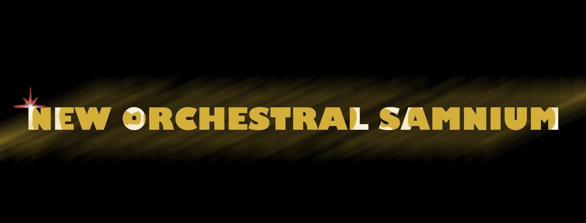
Manifesto
La nostra locandina:
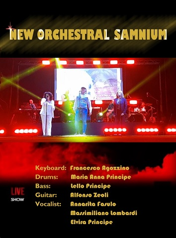
Qualcosa di noi
Professionisti di provata esperienza, creativi nell'arrangiamento ed esecuzione di brani conosciuti, partiture e componimento di nuovi brani musicali, jingle, sigle, scrittura di testi.
Il gruppo si avvale di un team worker per il contenuto editoriale-marketing e di agenzie per la promozione del gruppo in ambito di eventi pubblici e privati.
Foto
Prove e Backstage

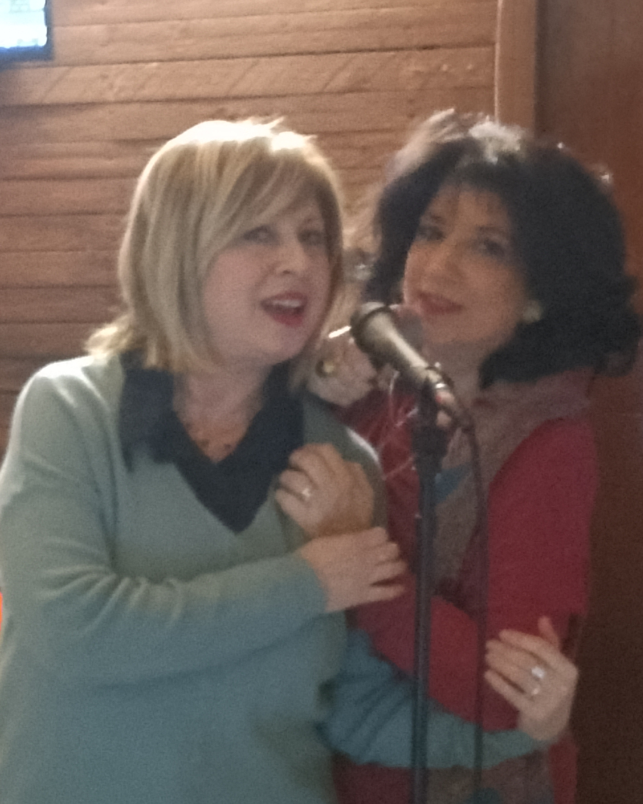
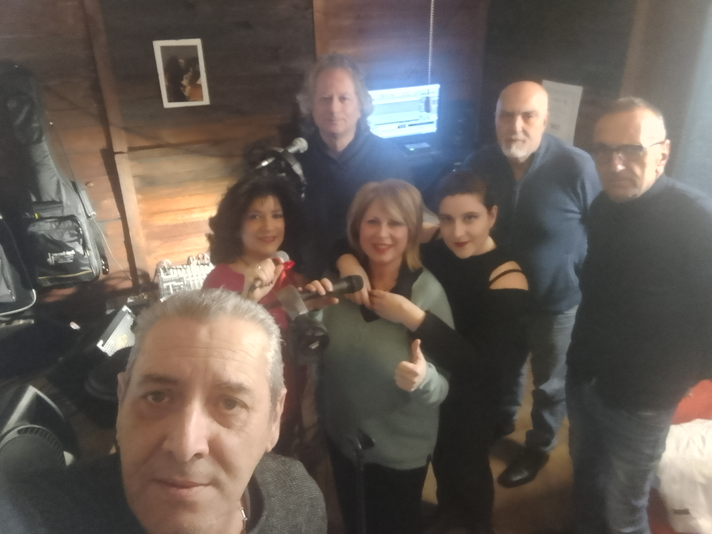
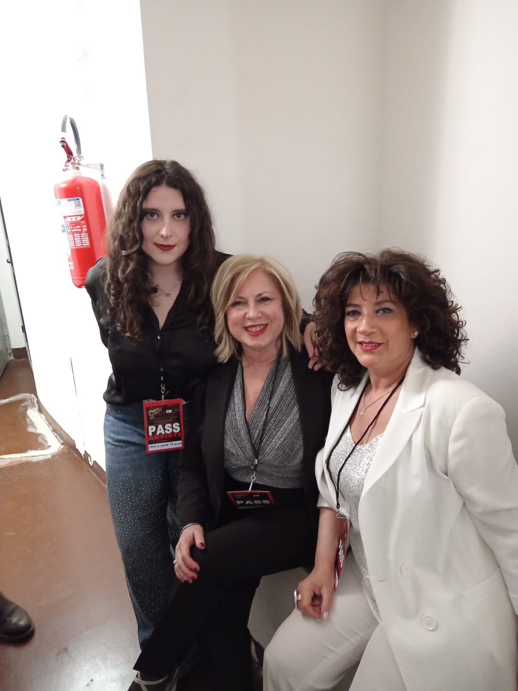
Progetto patrocinato da:
Eventi
Serata "AMICO MIO" 25/03/2025
Memorial Dario Dell'Oste
Teatro Comunale Benevento, a cura di Francesco Tuzio e Enzo De Rosa
YouTube
FESTEGGIAMENTI PER SANT'ANNA 26/07/2025
Contrada S. Anna - Cerreto Sannita (BN) - inizio ore 22,00
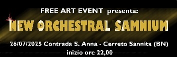
FESTEGGIAMENTI SS. ADDOLORATA 14/09/2025
Rione Libertà (BN) - inizio ore 21,00
Musicisti
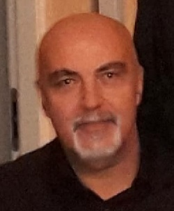
FRANCO AGOZZINO
Musica e Magia: studi classici di pianoforte e armonia e stage di prestidigitazione,
si esibisce con prestigiatori affermati.
Musicalmente con i WONTED, poi con L'IDEA un 45 giri, un tour
con orchestra spettacolo e con i NEW FREEMAN con cui registra negli studi di Gianni Boncompagni album destinati al mercato estero.
Con il gruppo BENEVENTO CENTRALE un CD di musica inedita "Tarantella Beneventana" è il brano di cui è autore e arrangiamenti in altri.
Primo posto a "Salerno Magica", fonda nel 2006 con Arnaldo Carletti il club Magico IL NOCE.
MARIA ANNA PRINCIPE
Laureata in Filologia Moderna-Umanistica Digitale, studia la batteria dall'età di 12 anni.
Per due anni frequenta la LIZARD ACCADEMIE MUSICALI presso la sede di Benevento.
Non ha mai perso la passione per la
musica e per lo strumento continuando poi a perfezionarsi insieme a batteristi di nota esperienza.
Continua a dedicarvisi
tutt'oggi con rinnovata passione seguendo la tradizione familiare da ben tre generazioni, attualmente insieme al papà Lello e sua zia Elvira.
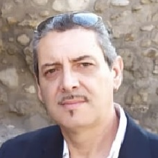
LELLO PRINCIPE
Fondatore della NEW ORCHESTRAL SAMNIUM. Dottore in TRSM, suona il basso da autodidatta, dapprima nel gruppo "I COBRA", poi K-STUDIO e BENEVENTO CENTRALE.
In tour dall'84 all'87 con artisti
anni '60. Corista con Vittorio De Scalzi dei NEW TROLLS. Partecipa a incisioni di dischi, l'ultimo è il CD di "BENEVENTO CENTRALE" con Francesco Agozzino, il quale è autore
della musica di "Tarantella Beneventana", ne ha curato gli arrangiamenti insieme all'amico Franco.
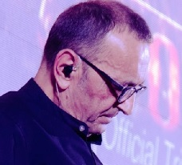
ALFONSO ZEOLI
Dal conservatorio alla cattedra in Educazione Musicale, inizia la carriera
di turnista in qualità di chitarrista in tour nazionali al seguto di artisti famosi del panorama
musicale italiano.
Da sempre chitarrista in numerosi gruppi musicali come musicista indipendente.
Attualmente
si esibisce negli eventi che riguardano la NEW ORCHESTRAL SAMNIUM.
Vocalist
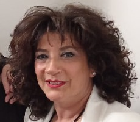
ANNARITA FASULO
i diploma come geometra, ma intanto studia in privato fisarmonica. Collabora negli anni come corista e solista accompagnando artisti famosi del panorama musicale nazionale.
Appassionata dei classici
napoletani, si laurea con lode in Canto Classico Napoletano presso il Conservatorio di Benevento dove partecipa a numerosi concerti e incide diversi CD di brani napoletani editi, sia come solista che come
corista.Segue allivi nel canto, oggi è voce nella NEW ORCHESTRAL SAMNIUM.
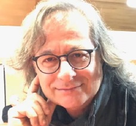
MAX LOMBARDI
Massimiliano ma per gli amici “MAX”. Finalista a Sanremo giovani nel 1982, canto pop,rock,latino ecc.
Front-man in vari gruppi musicali, innumerevoli serate da metà stivale in giù con
discreto successo.
Insomma gavetta a morire per ritrovarmi poi nel mondo del mitico Vasco Rossi nei suoi panni nella Cover-band. Ho avuto poi anche il privilegio di potermi esibire proprio al fianco dei
musicisti di Vasco.
Oggi canto con la NEW ORCHESTRAL SAMNIUM, miei vecchi amici. Vi aspetto…
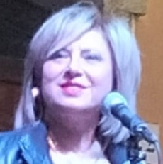